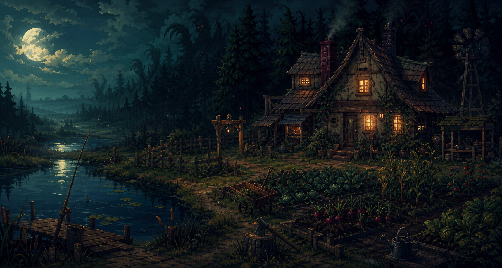

Confirm version and platform
Track release window, demo access, supported platforms, language options, controller support, and save behavior. Pre-release pages need visible "last updated" notes.

Unofficial guide MVP - Pre-release edition
A practical hub for players deciding whether to wishlist, try, or master Neverway: life sim routines, combat exploration, romance, crafting, resources, and the debt to Death.
Farming, fishing, crafting, cooking, relationships, combat, and exploration.
Platform details should be checked against official storefronts and announcements.
Pre-release coverage should clearly show update dates and avoid unverified data.
Release date, gameplay, characters, starter tips, resources, bosses, and patches.
Beginner Path
Western players will usually move from "What is Neverway?" to "How should I spend each day?", "Who can I romance?", "How do resources work?", and "How do I survive combat?" The MVP is built around that search funnel.
Track release window, demo access, supported platforms, language options, controller support, and save behavior. Pre-release pages need visible "last updated" notes.
Break the day into farming, gathering, social time, crafting, and night exploration so players avoid early resource waste.
Guide pages should rank tools, inventory space, meals, healing items, and crafting stations instead of only listing wiki-style facts.
Life sim players repeatedly search for gifts, romance conditions, birthdays, heart events, and dialogue triggers. These pages are long-term traffic anchors.
Guide Hub
Neverway sits between cozy games, RPGs, and eerie exploration. The site needs to serve casual players, completionists, and efficiency-focused players without becoming a generic wiki dump.
Crop seasons, profits, growth days, watering rhythm, wild resources, and refresh rules.
Crafting stations, recipes, sell value, material routes, and debt repayment priorities.
Weapons, dodging, status effects, boss patterns, prep checklists, and risk zones.
NPC profiles, gift preferences, heart events, relationship routes, and ending branches.
Area unlocks, hidden rooms, fishing spots, shortcuts, hazards, and collectible routes.
Release date, demo notes, patch logs, storefront links, platform differences, and FAQ.
Characters
Before launch, the site should avoid inventing gift data or event triggers. The MVP sets up a clean structure that can be filled quickly once the final build is available.
Searchable MVP
Search by keyword or filter by topic to preview the guide site's core content experience.
Tracks PC, Switch, wishlist links, demo availability, language support, and update dates for high-intent pre-release searches.
Splits farming, gathering, social time, crafting, and night exploration into a practical first-week checklist.
Post-launch tables should include prices, growth days, recovery values, material sources, and recommended uses.
A long-tail traffic page for life sim players, filterable by character, gift item, event level, and relationship route.
Organizes recommended gear, supply lists, boss patterns, rewards, and route notes for dangerous areas.
Frames the economy around the core objective: when to earn money, when to upgrade, and when to push exploration.
Content Roadmap
A guide site needs to be useful at launch, then keep earning long-tail traffic through updates, tables, and verification.
Cover release date, gameplay overview, platforms, demo details, character list, romance FAQ, and official source tracking.
Fill beginner routes, resource values, gift preferences, boss mechanics, map unlocks, and common player blockers.
Add interactive tables, build paths, full collection routes, achievements, endings, version differences, and patch notes.